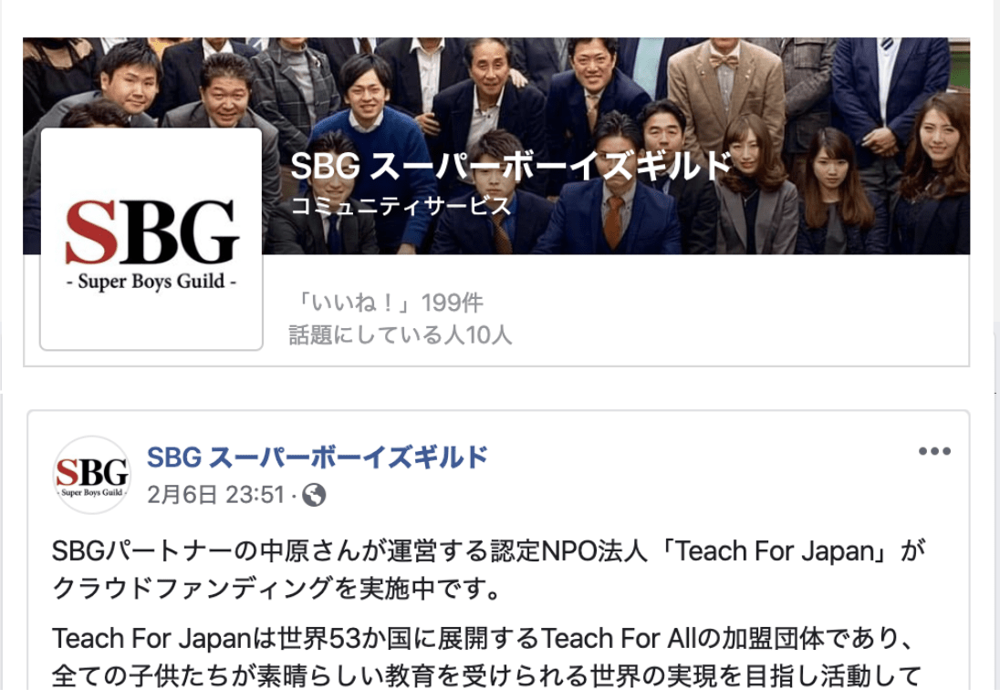

SBG か らのお知らせ
SBG の 価値観
“個”のチカラを最大化するビジネスギルド
令和は、“個”の時代です。インターネット・SNSの台頭により大手メディアが没落し、 個人が意見・情報を世界に発信することができるようになりました。以前は想像もできな かった大企業とベンチャーとの協業も起こっています。こういった時代であるからこそ、 個”をいかに磨くのか、“個”と“個”をいかに有機的に連動させていくのか。それが新時 代を勝ち抜く鍵となります。
“個”が集まり、それぞれが持つノウハウやサービス、人脈などのリソースを共有することで、 参加者全員が多様なノウハウ、競争力のあるサービス、幅広い人脈を活用する。SBGは、“個” のチカラを最大化するビジネスギルドだと言えます。
ギルドのメンバーであるためには、まずもって自立していなければなりません。天は自ら 助くる者を助く。ギルドがギブの連鎖でなりたつものである以上、その構成員たるために は率先してギブできる必要があるからです。反対に、自立した人にとっては、ギルドは最 高のプラットフォームになります。そこには、自身のギブに対しギブで応えてもらえると いう信頼があるからです。
SBGには、世代や業種を超えた多くの“個”が集います。この多様性が、そこから生み出 されるものの可能性を広げ、共存共栄の先に社会を変えるチカラの源泉となります。自立 した“個”が集まることで、SBGは、新時代を共創します。
SBG の ミッ ション